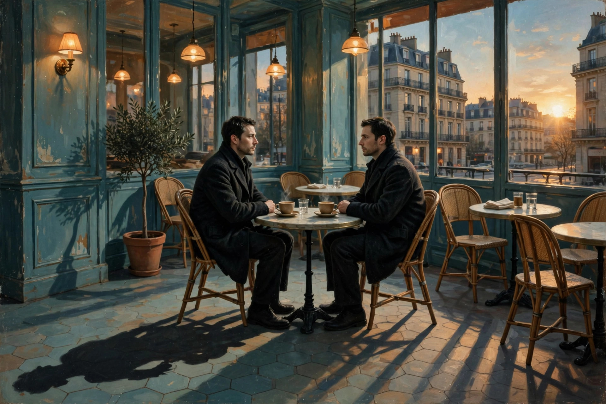

Sosie — a person's exact double; a living look-alike. In French it is the everyday word for a double, and especially for a celebrity look-alike or impersonator.
Say it out loud: SOH-zee. Tonight's board was thick with soup words and superioresses, and hiding in the S's was this: a common noun that is a stolen name. A sosie isn't a twin and isn't a ghost — it's a stranger wearing your face.
From French sosie, from Latin Sosia — the slave in Plautus's Amphitruo (c. 200 BC), whose shape the god Mercury takes.
A name, a theft, a word — tap each:
Sosia never got his name back. Every look-alike since has been borrowing it.
Three facts that have to be held together:
Not a twin, not a relative, not a ghost. A sosie is a living stranger who looks exactly like someone else — close enough to be waved at in the street by people who know the original.
In modern French, un sosie is the everyday word for a celebrity double — the Elvis at the fair, the queen at the garden party. Look-alike contests judge strangers on how completely they are somebody else.
Under the comedy sits the eerie part: if someone else has your face and your name, what proof do you have left that you're you? Sosia's evidence — "he beat me, and I was wide awake" — convinced nobody.
Plautus stages Amphitruo in Rome: Jupiter is scheming, and Mercury guards the door wearing Sosia's face. The original double-act, two thousand years before look-alike contests.
Mercury-as-Sosia out-argues the real Sosia on his own doorstep, beats him with his fists, and sends him home doubting he exists. Sosia's whole defense: he saw the man wide awake.
The name crosses into French as sosie, the common noun for a double. Not the god's name, not the master's — the victim's. The word remembers who paid.
Celebrity look-alikes, impersonator contests, the stranger on the train you almost greet. English borrows sosie for the purest case: an exact double, no relation at all.
1. A sosie is…
2. The word comes from Sosia, who was…
3. In the play, Mercury, wearing Sosia's face,…
4. In modern French, un sosie most often means…
You mine Blossom for prompt seeds — here's this one, ready to plant:

Tonight's render — spot the quiet impossibility.